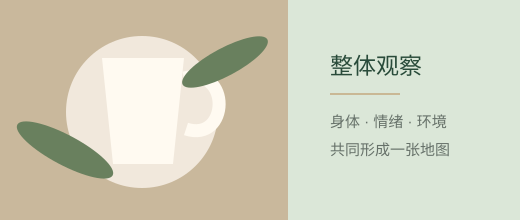
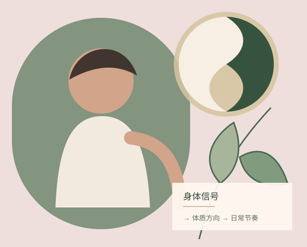
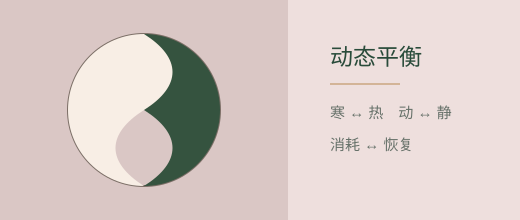
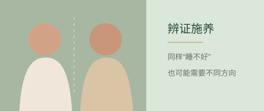
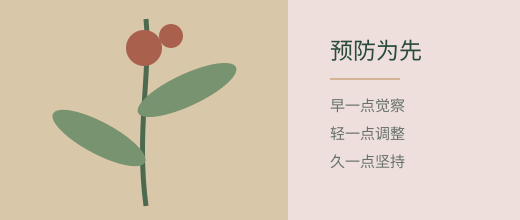
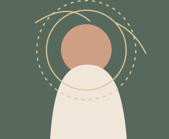
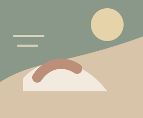
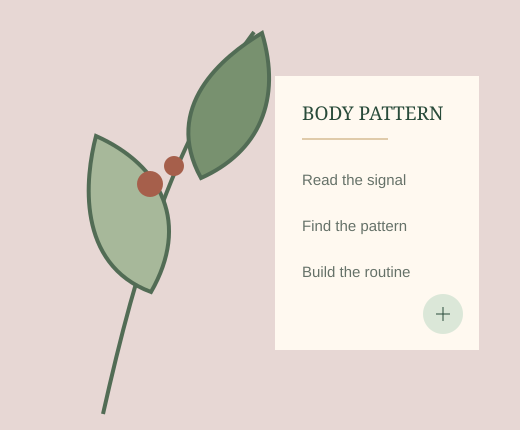

整体观察
从睡眠、消化、情绪、精力与生活环境一起看身体。

先聊体质，再推荐产品 · 目前使用本地对话规则，后续可接入大模型
开始对话
睡眠、消化、情绪、精力与季节彼此牵动。整体观念，就是把这些细微变化放回同一张身体地图里理解。
真实生活场景建立信任，植物与身体插画解释看不见的关系。
从睡眠、消化、情绪、精力与生活环境一起看身体。

阴与阳不是固定标签，而是寒热、动静、消耗与恢复之间不断调整的关系。

相似的感受可能来自不同的体质方向，调养方式也需要因人、因时而改变。

在明显不适出现之前读懂微小信号，把支持放进每天。

先理解，再判断方向，最后才推荐产品与体验。
从最近的睡眠、压力、消化、情绪与能量状态开始。
把复杂概念翻译成身体倾向，而不是给你贴标签。
围绕作息、情绪、饮食与草本支持，形成更容易坚持的方案。
“睡不好”只是表面描述。辨证施养，就是先看清差异。

需要先帮助情绪与思绪慢下来。

需要先建立稳定的休息与补充节奏。
从常见的五种日常需求出发，选择与你当前状态更匹配的支持。

我们不把中医包装成神秘术语，也不做医疗诊断或夸大承诺。先讲感受，再讲可能的身体倾向，最后给出日常支持。
体质不是永久标签，而是一种帮助你更早觉察身体、持续调整生活的观察方法。
不是找到一个永久不变的答案，而是更早听见身体，并随着生活持续调整。
从一次轻量的体质对话开始，找到你当前更值得优先关注的方向。
开始了解自己的体质